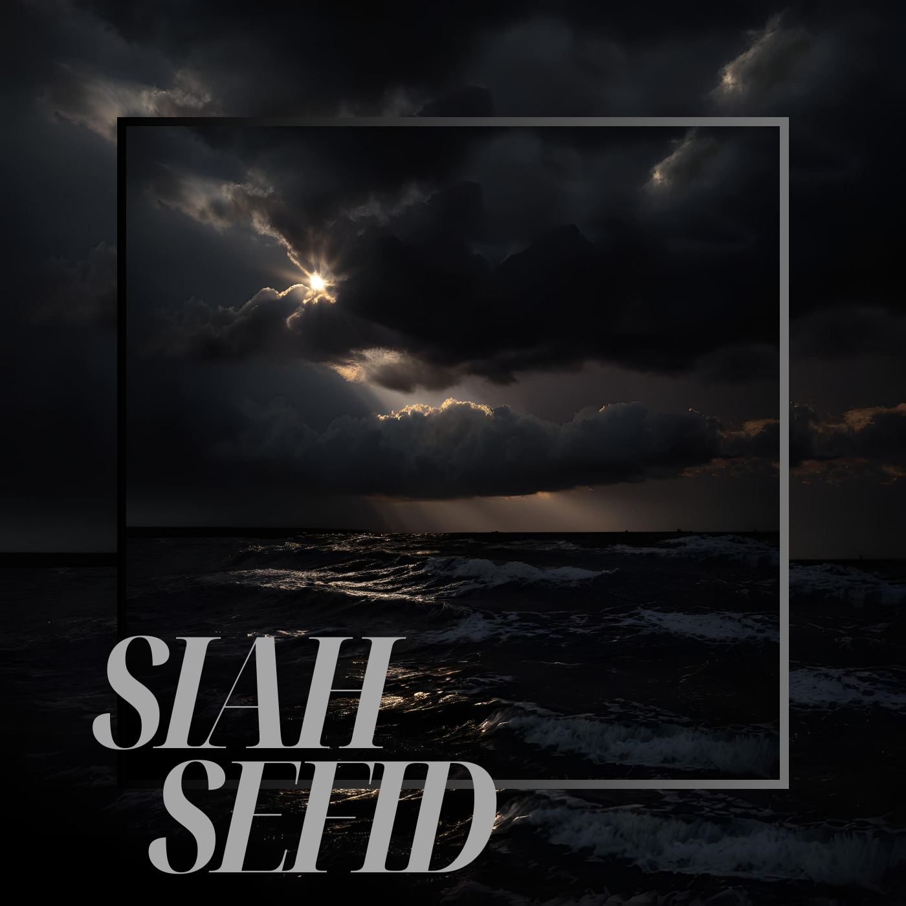

My Music

I'm a music producer and singer dedicated to crafting sounds that inspire and connect. My world where melodies meet emotions and every beat tells a story.
"Hey, I’m Delicato who’s all about creating music that feels real and honest. I love the process of taking a simple idea—a feeling, a moment, or a story—and turning it into something that resonates. Whether it’s a beat that makes you nod your head or a lyric that hits you right in the heart, I pour a lot of myself into every track. Music, for me, is about connection—it’s my way of sharing my world and hopefully making yours a little brighter. Let’s create something meaningful together. 🎶💙"